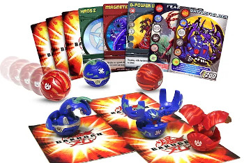

Para efeitos da nota atribuida à resolução de exercícios ao longo do semestre - Submeter até 23:59 de 25 de Outubro
(o problema continuará depois disponível para submissão, mas sem contar para a nota)
[para perceber o contexto do problema deve ler o guião da aula #02]
 Os Bakugans são pequenas esferas que quando são colocados em cima de cartas especiais, abrem-se, transformando-se em diferentes criaturas, tais como um dragão ou um escorpião. Cada Bakugan tem associada a si uma determinada quantidade de energia G que depois é usada quando combatem para descobrir qual é o mais forte. Por exemplo, podemos ter um Bakugan com 300G, outro de 400G e outro de 500G, sendo que o mais forte dos três seria neste caso o de 500G.
O pequeno Elias gosta muito dos seus Bakugans e resolveu colocá-los todos dispostos em linha, para poder tirar várias fotos e mostrar aos seus amigos. Como uma foto não consegue apanhar todos os Bakugans, ele decidiu que queria apenas mostrar as fotos que apanhavam os Bakugans mais fortes, com mais energia, mas ele precisa da tua ajuda para calcular a energia presenta em cada foto.
A disposição dos Bakugans pode ser pensada como uma sequência de inteiros descrevendo a energia de cada um. Por exemplo, a seguinte sequência representa 10 bakugans dispostos em fila:
Posicão: 1 2 3 4 5 6 7 8 9 10
Bakugans: 100 200 300 100 400 100 500 600 200 300
Cada foto é descrita por uma subsequência contígua de bakugans, identificados pelas suas posições de início. Por exemplo, uma foto entre as posições 2 e 6 corresponderia a:
Posicão: 1 2 3 4 5 6 7 8 9 10 Bakugans: 100 200 300 100 400 100 500 600 200 300 (energia na foto = 200 + 300 + 100 + 400 + 100 = 1100)
Neste caso, a energia total da foto (correspondente à soma das energias dos bakugans que nela aparecem) seria 1100. Podes ajudar o Elias a descobrir a energia presente em cada uma das suas fotos?
Dada uma sequência de N bakugans, descrita pelas energias Ei de cada um deles, bem como uma série de F fotos, cada uma indicando que contém os bakugans entre as posições Ai e Bi, a tua tarefa é calcular, para cada foto, a soma das energias dos bakugans com posições no intervalo [Ai, Bi].
Na primeira linha do input vem um inteiro N indicando o número de bakugans, seguida da uma linha contendo N inteiros Ei, indicando as energias da sequência de bakugans.
A terceira linha contém um inteiro F indicando o número de fotos. Seguem-se F linhas, cada uma contendo dois inteiros Ai e Bi indicando respetivamente a posição de início e de final da foto correspondente.
O output deve conter F linhas. A i-ésima linha deve conter um único inteiro representando a soma de energia dos bakugans contidas nas posições entre Ai e Bi, inclusive.
São garantidos os seguintes limites em todos os casos de teste que irão ser colocados ao programa:
| 1 ≤ N ≤ 200 000 | Número de bakugans | |
| 1 ≤ Ei ≤ 1000 | Energia de cada bakugan | |
| 1 ≤ F ≤ 200 000 | Número de fotos | |
| 1 ≤ Ai ≤ Bi ≤ N | Posição inicial e final de cada foto |
10 100 200 300 100 400 100 500 600 200 300 5 2 6 1 10 7 7 4 8 3 9
1100 2800 500 1700 2200
A primeira foto corresponde aos bakugans nas posições 2 a 6 e tem como soma de energias 1100 = 200 + 300 + 100 + 400 + 100.
A segunda foto contém todos os bakugans (posições 1 a 10) e tem soma total 2800.
A terceira foto contém apenas o bakugan da posição 7, que tem energia 500.
A quarta foto contém os bakugans das posições 4 a 8 (com soma 1700).
A quinta foto contém os bakugans das posições 3 a 9 (com soma 2200).
Desenho e Análise de Algoritmos (CC2001)
DCC/FCUP - Faculdade de Ciências da Universidade do Porto